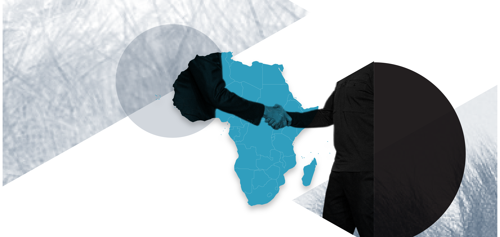
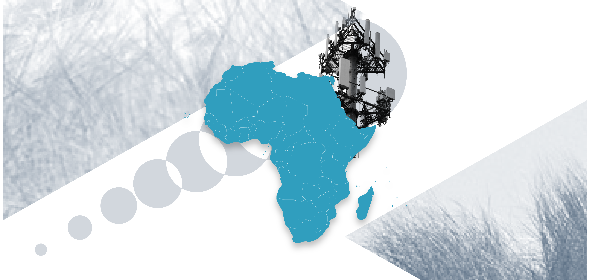
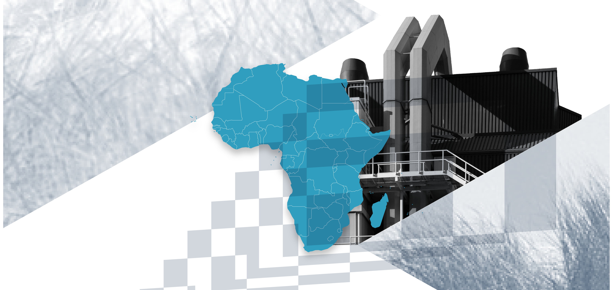
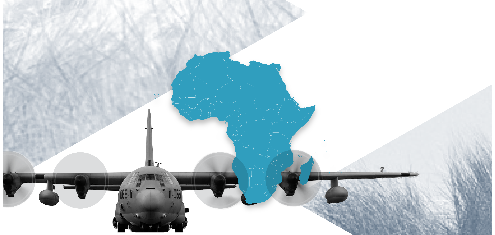
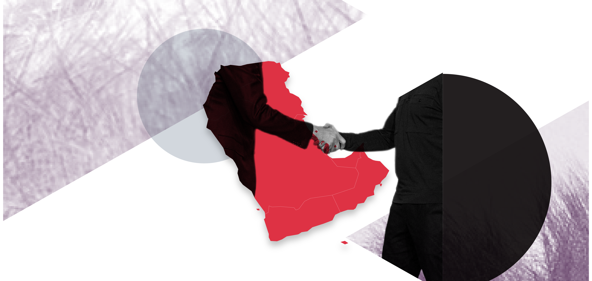
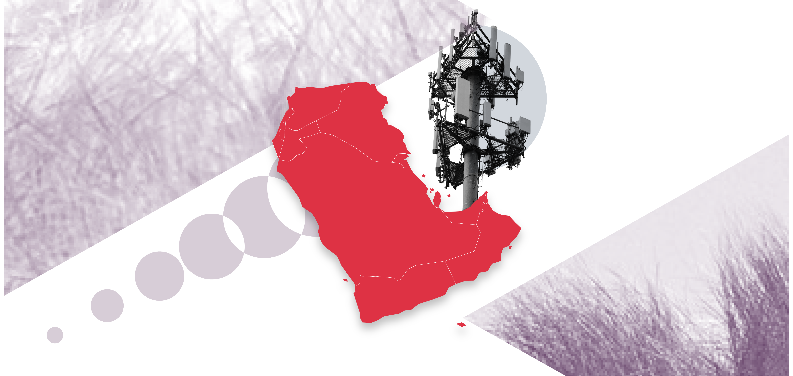
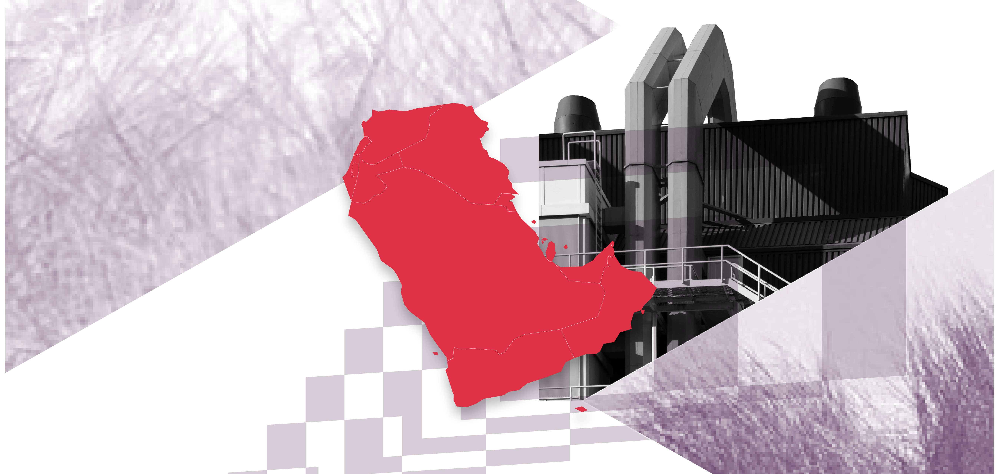
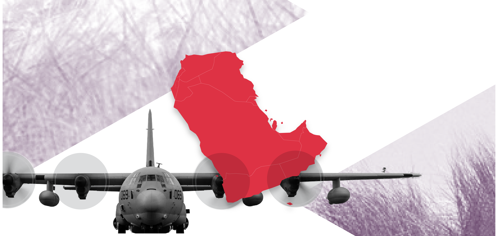

Levers of Influence maps how 16 external actors engage through diplomacy, soft power, economic ties and military cooperation in two regions of strategic importance to the EU: Africa, and the Middle East and the Gulf. The picture is neither one of Western retreat nor a wholesale shift from West to East. Although trade is gradually tilting towards Asia - most clearly in the Middle East and the Gulf – no single rising challenger is displacing established partners across the board. Instead, external influence is crowded and layered. Actors specialise by dimension, subregion and, often, a small set of partner countries. No single actor leads across all four dimensions, while formal partnerships, diplomatic activity, trade, finance, military presence and voting alignment often point in different directions. Headline rivalries therefore capture only part of how external influence is distributed.
* This designation shall not be construed as recognition of a State of Palestine and is without prejudice to the individual positions of the Member States on this issue.
The EU remains an incumbent heavyweight, but it is largely holding its ground rather than gaining it. It is Africa’s largest trading partner and largest recorded FDI counterpart, as well as the most active source of high-level visits. Among the external actors tracked, the EU is also Africa’s largest provider of official finance, leading among around two-thirds of country-coded recipients, and ranks ahead of the United States in the Middle East. There, the EU also runs the largest goods surplus among the actors analysed, while its Member States are the largest contributors to UN peacekeeping missions. Yet this broad presence is not translating into greater relative weight. Trade shares are broadly flat, and European net ODA to Africa fell by almost a fifth. In infrastructure, European sponsor participation remains substantial, but Chinese-registered suppliers capture a much larger share of the value of foreign World Bank IPF awards associated with infrastructure projects in Africa. At the UN, African states align more often with the EU than with Russia on Ukraine, but most closely with China, India and Türkiye on decolonisation. On international tax governance, African positions are closer to those of China, India and Russia. Europe therefore retains unusually broad and deep-rooted relationships across both regions, while facing growing pressure in strategically important sectors from actors able to concentrate resources in particular markets and countries.
Other major actors are strongest in specific domains. The United States remains the dominant military presence and arms supplier in the Middle East and the Gulf and ranks second among the aid providers tracked in both regions. Its commercial footprint, however, is comparatively modest, and its role as an official bilateral creditor is largely a legacy of earlier lending. China combines broad diplomatic coverage in Africa with strong commercial and infrastructure positions. It is the largest goods-trade partner in the Middle East and the Gulf and the second-largest in Africa, while Chinese-registered suppliers receive most of the foreign World Bank infrastructure-award value analysed in Africa. Yet its financial role is also changing. China remains Africa’s largest official bilateral creditor, but average annual net flows turned negative in 2022–2024 as repayments exceeded new disbursements. Its development-finance model also differs markedly from conventional aid: most recorded commitments are OOF-like rather than ODA-like and are heavily concentrated in infrastructure.
Beyond the United States and China, several actors have carved out distinct niches. Japan stands out among the larger donors for substantially expanding aid in both regions, largely through loans, and became Iraq’s largest selected aid provider in 2022–2024. Gulf engagement is prominent but highly concentrated: the UAE accounts for around 85% of the Gulf’s recorded FDI position in Africa and is the main driver of the GCC’s position as the third-largest trading partner among the actors tracked, while individual Gulf donor profiles vary sharply across regions. Türkiye has the widest diplomatic network in the Middle East, India is the largest external contributor to UN peacekeeping missions in Africa, and Russia’s security footprint is increasingly concentrated in private military deployments and a narrower set of arms relationships.
The following analysis traces these patterns across each dimension, asking where the EU’s weight translates into influence and where other actors are redefining the terms of partnership.

The courting of African countries has intensified in recent years, as reflected not only in the expansion of diplomatic networks but also in high-level visits, formal partnerships and a growing number of proposals for dedicated summits. African countries, however, are strongly asserting their agency by diversifying their partnerships and through voting patterns at the UN General Assembly that reflect selective engagement or abstention in line with their interests.

Soft power is the ability to attract and persuade through culture, ideas and preferences, and to project a favourable image. In Africa, external actors extend their reach through development cooperation, cultural institutes and people-to-people ties fostered by students and migrants. The EU stands out for the breadth of its outreach, but as other actors expand their presence, coordination and Team Europe branding become increasingly important.

Africa’s trade relationships remain anchored in the EU, but aggregate shares conceal important shifts. China continued to strengthen its position, particularly in sub-Saharan Africa and selected strategic supply chains, while India, Türkiye and Gulf actors are gaining ground in specific sectors and markets. Changing trade balances and the concentration of key suppliers and export destinations showcase how commercial ties can create dependencies and potential leverage.
External finance connects African economies to global partners through investment, aid, remittances and debt. Europe retained the broadest financial footprint among the actors considered, leading in aid and recorded investment positions, although the US had narrowed the aid gap. China remained Africa’s largest bilateral creditor despite net repayments, while multilateral finance was gaining importance. Investment relationships were also highly concentrated, with individual external actors holding dominant positions in several African economies.
Infrastructure engagement is assessed through World Bank data on private participation (PPI) and contract awards, providing a window onto external actors’ roles. Taken together, the two indicators point to contrasting patterns: sponsors registered in EU member states have the broadest footprint in private participation, while Chinese- registered firms dominate World Bank-financed construction awards. These differences are also geographic: sponsorship is relatively dispersed, whereas construction awards are more concentrated by actor and country.

Military cooperation in Africa is concentrated in a few hotspots where several external actors conduct military exercises, including naval exercises in the Gulf of Guinea and the Gulf of Aden/Western Indian Ocean. Other military exercises and arms transfers also cluster around certain countries, such as Egypt.

External actors have an extensive diplomatic presence in the region, but preferential relations are more diffuse and are reflected in the concentration of high- level visits. While US officials visit Israel most frequently, EU officials travel frequently to Amman. The proliferation of consultations and partnerships, including with China and India, also highlights the region’s strategic importance for several external actors. This section analyses diplomatic ties through five lenses: embassies, high-level visits between 2019 and July 2026, summits, formal partnerships with countries in the region, and voting patterns at the UN General Assembly on selected issues.

Soft power operates differently in the Middle East and the Gulf. Development cooperation is concentrated in the Middle East, while international students and migrants appear to play a greater role in fostering people- to-people ties in the Gulf.

The Middle East and Gulf’s trade relationships are increasingly oriented towards Asia, although the EU remains a major commercial partner. China leads in overall trade and has strengthened its position in strategic supply chains, such as green-energy equipment, while the EU retains strengths in agri-food and high-tech goods. Türkiye, India and Russia occupy important niches in particular sectors and markets. Contrasting hydrocarbon and non-hydrocarbon trade balances, alongside the concentration of key suppliers, reveal dependencies and potential sources of leverage that aggregate trade shares alone do not capture.
External financial relationships in the Middle East and Gulf do not follow a single hierarchy. The EU retains a leading position in recorded FDI and remains a major provider of official assistance, although its recorded investment shares and Member States’ bilateral debt exposure have declined. Other actors have more selective strengths: the US in investment, particularly in Israel; Japan in continued bilateral lending; China in project finance concentrated in Iraq; and Gulf states through distinct, often country-specific financial relationships. These differences illustrate how the scale, instruments and geographical concentration of finance shape external actors’ exposure and potential leverage.
[description]

The US remains the region’s main security partner. However, regional actors and other external partners are far from being bystanders. The scale of joint military exercises in the Gulf demonstrates that regional actors are increasingly developing their security partnerships with a diverse range of partners.
The EU remains an important partner for Africa, the Middle East and the Gulf. Across the dimensions analysed in this publication – diplomacy, trade, financing, infrastructure, soft power and military cooperation – the EU ranks among the key partners in both regions. However, its presence in Africa is heavily concentrated in North Africa, while other actors, such as China, have expanded their engagement in sub-Saharan Africa. In the Middle East and the Gulf, the US maintains a leading role in military cooperation, although other actors, including the Gulf countries themselves, are increasing their contributions to regional security.
The analysis of diplomatic and soft power outreach shows that no other external actor matches the scale of the EU’s investment and presence. Through its extensive diplomatic networks, development cooperation agencies and projects, and cultural institutions, Team Europe has a reach unmatched by any other single actor.
Economically, the EU remains one of the main partners in both regions, although its position varies considerably across actors and subregions. It remains Africa’s leading trading partner, a position driven disproportionately by its close commercial ties with North Africa. In the Middle East and Gulf, China has overtaken the EU in total goods trade, although the latter retains a strong position in high-tech and agricultural products. Across both regions, China’s growing dominance in green-energy equipment illustrates how the EU can retain considerable overall commercial weight while losing ground in strategically important sectors. Other actors, including India and Türkiye, have also established significant positions in specific markets, contributing to an increasingly diversified landscape of trade relations.
Financial ties reveal a similarly differentiated picture. Europe remains the largest provider of development assistance among the actors examined in both regions and an important source of foreign direct investment, although its relative weight has come under pressure. China is Africa’s largest bilateral public creditor, while Japan occupies that position among the creditors examined in the lower- and middle-income Middle Eastern countries covered. Gulf countries have also become important providers of development finance and investment, particularly within the Middle East. Overall, the findings point not to the wholesale displacement of established European partners, but to an increasingly crowded economic landscape in which different actors hold distinct advantages across sectors, countries and forms of engagement.
In terms of soft power, the EU and its Member States have the broadest networks of development agencies and cultural institutes. They also consistently rank among the leading destinations for students and migrants from both regions, while maintaining significant migrant populations in the opposite direction. However, other external actors are expanding their engagement in these areas, with Türkiye standing out for its growing soft power outreach. Despite the EU’s extensive presence, perception surveys suggest that its influence is not always viewed as favourably as its level of engagement might suggest. In Africa, the EU generally ranks second or third in positive perceptions of external influence, while China receives the most favourable ratings.
In the military sphere, the EU demonstrates a stronger commitment to multilateral institutions than other actors in the Middle East. In Africa, however, it has increasingly focused on its own missions and coordination mechanisms, while other actors examined in this publication show greater involvement in multilateral operations, including UN missions. This shift reflects a broader decline in foreign military deployments across Africa, a trend widely discussed in the literature. It also reflects growing opposition to certain forms of European military presence, fuelled in part by renewed grievances against former colonial powers, which other external actors have sometimes exploited to advance their own interests. Nevertheless, EU institutions and Member States have continued to cooperate with African partners through multilateral frameworks, including the Yaoundé Architecture in the Gulf of Guinea and the Djibouti Code of Conduct in the western Indian Ocean.
Despite its considerable presence and resources, the EU does not always succeed in translating its influence into political leverage. The scale of trade, investment, development assistance and other forms of engagement does not necessarily reflect an ability to shape partners’ choices. This distinction is particularly important in an increasingly competitive geopolitical environment in which support for multilateral institutions and values is weakening, and partners increasingly seek to diversify their relationships and hedge between external actors to preserve their autonomy and strengthen their bargaining positions. As this trend is likely to continue, the EU needs to navigate an increasingly crowded arena more effectively. This requires stronger coordination and unity among EU institutions and Member States, including pooling resources through Team Europe initiatives wherever possible; communicating its activities and results more effectively, particularly in infrastructure development and job creation; supporting partners’ aspirations for greater representation in multilateral institutions; and prioritising tailored, interconnected investments and projects over scattered initiatives to increase the positive impact on local communities livelihoods and countries’ development. Across many of the domains analysed in this publication, the EU remains one of the stronger actors and partner for countries in the regions, but often only in Team Europe format, combining EU institutions and 27 Member states.